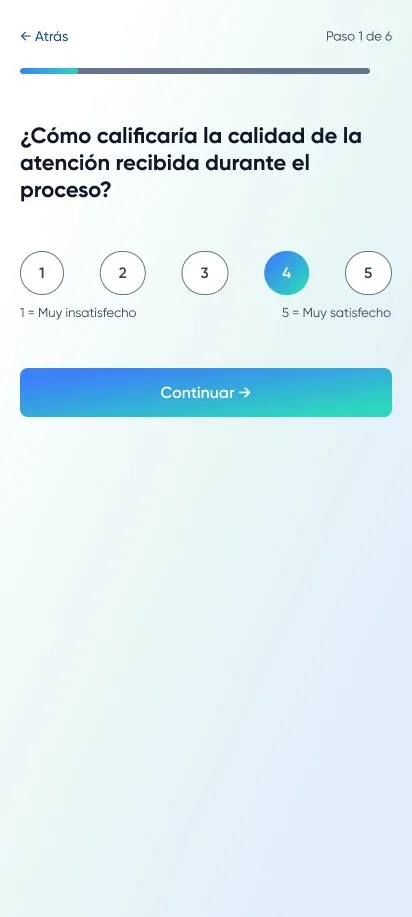
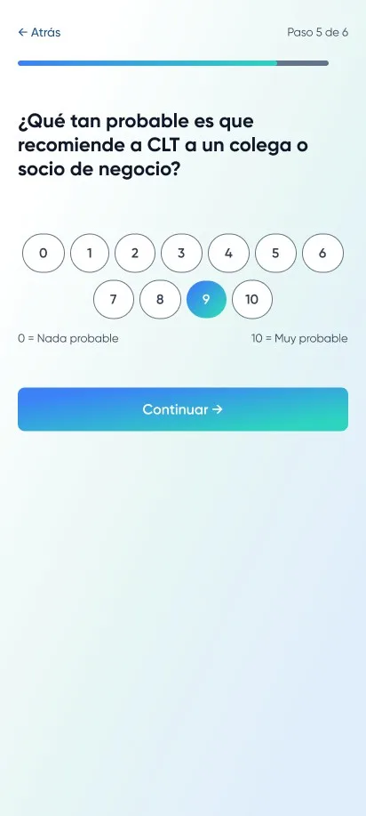
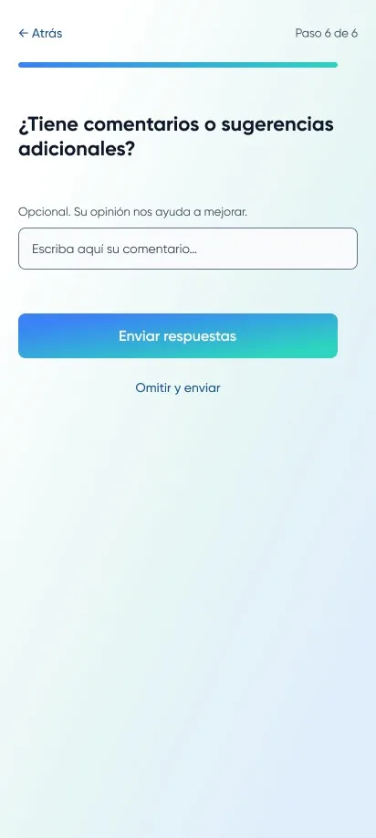
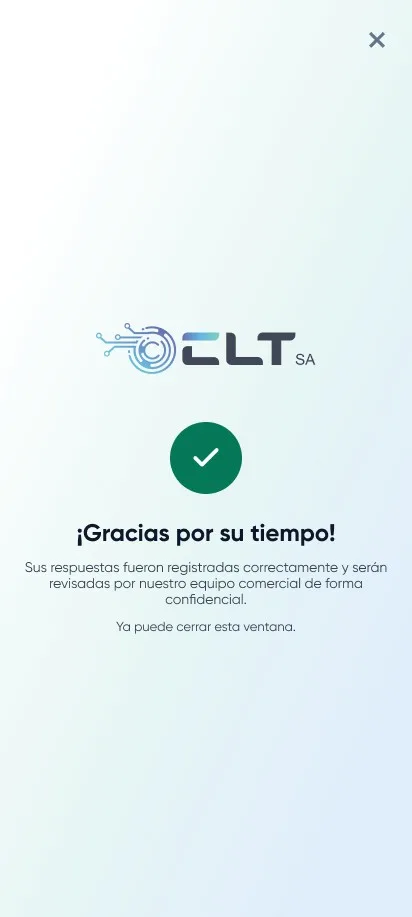
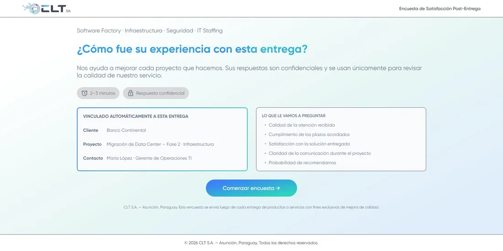
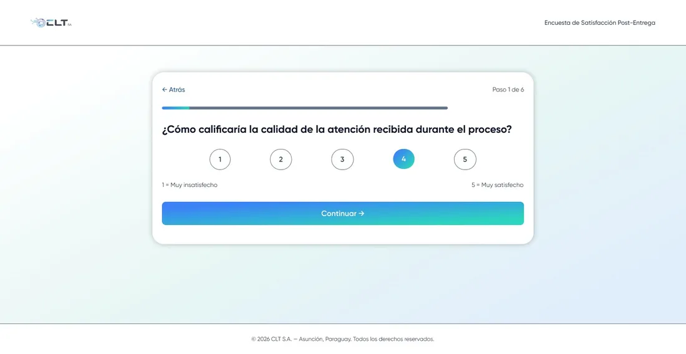
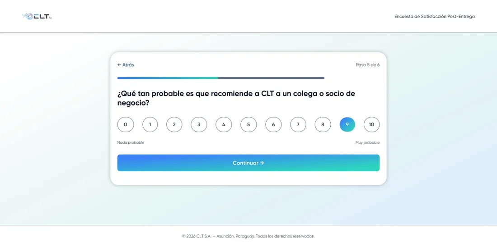
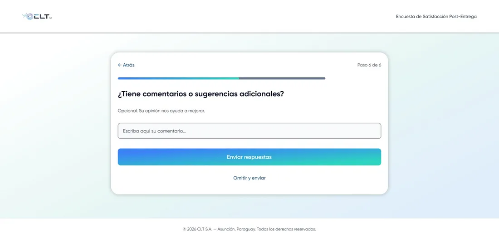
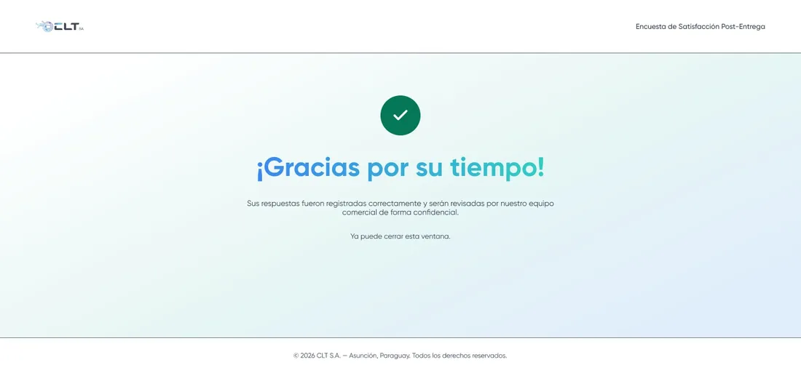

1 / 10
Sobre el proyecto
Es la encuesta que recibe el cliente de CLT después de cada entrega. Muestra los datos del cliente, el proyecto y el contacto, y hace cuatro preguntas con escala del 1 al 5: atención, plazos, solución y comunicación. Después vienen una pregunta de recomendación (NPS) y un espacio para comentarios. Está diseñada para mobile y web.
Mi colaboración
- Definición, junto con el área comercial, de qué medir en cada entrega: atención, plazos, solución, comunicación y NPS.
- Diseño del flujo paso a paso con barra de progreso, para que se complete en 2 o 3 minutos.
- Definición de los datos del cliente, proyecto y contacto que el formulario recibe ya cargados desde la entrega.
- Diseño en mobile y web con componentes propios y la identidad visual de CLT.
- Redacción de los textos de cada pantalla (preguntas, escalas, mensaje de cierre).
- Construcción del diseño con prompts en Claude y modificaciones manuales para un acabado más atractivo.